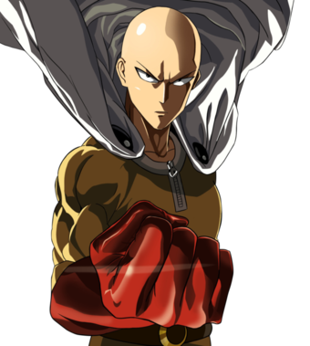
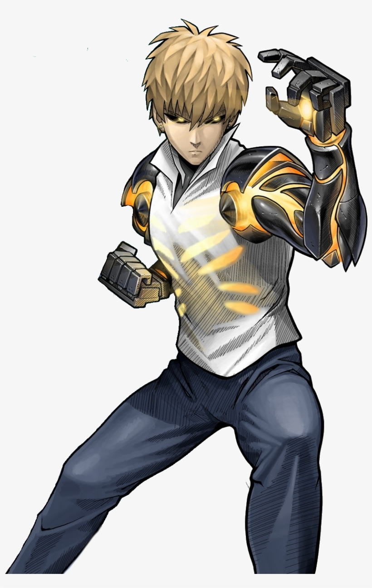

# Cliquez sur les images pour acceder à la page du personnage correspondant
Saitama,hero principal de l'histoire,jeune homme sans emploi devenu super héros après un entrainement intensif et pouvant battre n'importe quel ennemi avec un seul coup de point.Il est le héro imbatable mais dont personne ne connais l'éxistence malgré ses exploits car il reste dans l'ombre des héros de classes supérieures.
Genos,un cyborg extremement puissant possèdant tout un arsenal d'arme toute plus impressionante les unes que les autres devenu un héro de classe S (le rang le plus élevé) et étant le seul a avoir conscience de la puissance de Saitama et deviendra donc son élève pour espéré devenir aussi fort que lui.
